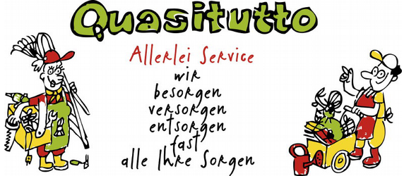
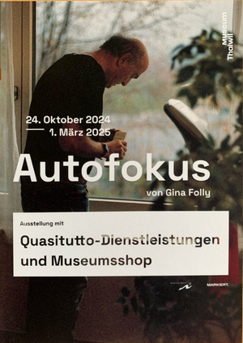
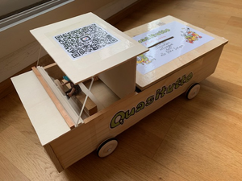
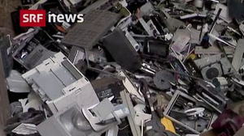
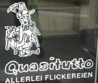

Neues von Quasitutto, 4. Ausgabe
Quasitutto im Museum Thalwil
Wir freuen uns sehr, euch anzukündigen, dass die tolle Photoausstellung „AUTOFOKUS“ von Gina Folly im Herbst/Winter 24/25 im Museum Thalwil gezeigt wird.
Unser Verein steht im Rampenlicht des Geschehens. Gina hat unsere Quasitutto-Mitarbeiter:Innen in voller Aktion photographisch dokumentiert. Die Ausstellung gibt uns auch Gelegenheit, unsere Kernanliegen bezüglich Ressourcenschonung, Reparieren und Umweltbewusstsein unter die Leute zu bringen. Jeden Samstag 14 bis 17 Uhr wird jemand von unserem Verein anwesend sein.
Dazwischen gibt es immer wieder mal kleinere Spezialveranstaltungen: Ein kleines Extra-Repair-Café / ein Science-fiction-Spielfilm / ein Podiumsgespräch mit dem bekannten Altersforscher François Höpflinger, Prof. Dr. phil. Alters- und Generationenforscher, zum Thema „Gebraucht-Werden“ im Alter und Upcycling-Bastelveranstaltungen für Kinder.
Merkt euch die Daten und strömt mit euren Familienmitgliedern, Freunden und Nachbarinnen samstags ins Museum — wir freuen uns sehr auf sie!
|
 |
AUTOFOKUS, Museum Thalwil, 24. Oktober 2024 - 1. März 2025 Die Ausstellung von Gina Folly bespricht zwei Werkserien zum Thema „Gebrauchtwerden — in Gebrauch sein“ und ist im Zusammenhang des Manorpreises 2023 im Kunstmuseum Basel erstmals gezeigt worden. Gina Folly hat mit dem Verein Quasitutto von Thalwil zusammengearbeitet. Quasitutto ist ein Verein von vorwiegend pensionierten Menschen aus verschiedenen Berufsbranchen, die allerlei Dienstleistungen anbieten. Gina Folly begleitet die Mitglieder mit ihrer analogen Kamera bei ihren Einsätzen. Sie beleuchtet dabei die Fragen nach dem Verhältnis von individuellem Nutzen und gesellschaftlicher Nützlichkeit. In unserem Museumsshop können Sie Produkte, die von Quasitutto-Mitgliedern selbst hergestellt worden sind, kaufen. |
|
Übrigens sind wir sehr am Sparen auf ein neues Transporterli — leider macht es unser guter Piaggio nicht mehr allzu lange. Unsere selbstkonstruierte Sparbüchse dürfen Sie auch an der Ausstellung bewundern und natürlich gerne auch füttern. |
 |
Programmpunkte und Termine rund um die Ausstellung:
- Vernissage
Donnerstag 24. Oktober 2024, 18.00 Uhr
Einführung, Begrüssung und Apéro. - Quasitutto
Während den Samstagsöffnungszeiten ist mindestens ein Teammitglied anwesend und steht für Fragen und Informationen zur Verfügung. - Filmvorführung
9. November, 17.00 Uhr im Kafi International
Everything Will Change — Science Fiction Spielfilm von Marten Persiel, 2021
Eine Zukunftsvision wie es nach dem Klimawandel weitergehen könnte und wie unser Planet doch noch zu retten wäre.
Der Spielfilm erzählt die Geschichte vom abenteuerlichen Road-Trip dreier Freunde, die im Jahre 2054 in einer sterilen, betonierten Welt wohnen. Als sie erfahren, dass ihr Planet einst von reicher, bunter Schönheit geprägt war, machen sie sich auf eine Reise, um Antworten auf ihre immer grösser werdenden Fragen zu suchen... - Upcycling Weihnachtsbasteln
30. November und 14. Dezember, 14.00 - 17.00 Uhr - Kleines Repaircafé
11. Januar 2025, 14.00 - 17.00 Uhr - Referat und Diskussion
1. Februar 2025, 17.00 Uhr
Vortrag zum Thema „Gebraucht-Werden im Alter“ mit François Höpflinger, Prof. Dr. phil. Alters und Generationenforscher, mit anschliessender Diskussion. - Finissage
Samstag, 1. März 2025, 16.00 Uhr - Öffnungszeiten des Museums und Shops
Jeweils samstags 14.00 - 17.00 Uhr. Jeden 1. Donnerstag im Monat 18.00 - 20.00 Uhr.
Die vorgezogene Recyclinggebühr (vRG) ist eine Herausforderung
Wie alle wissen, setzen wir uns dafür ein, dass qualitativ gute Geräte gekauft werden. Diese können repariert und wieder verwendet werden.
|
 |
Dies meldete SRF 10vor10 am 21.08.2024 Handy, Fernseher, Computer — Elektrogeräte gibt es in jedem Haushalt. Erreichen sie das Lebensende, werden sie für uns wertlos. Nicht so für SWICO. Der Verband verwertet wertvolle Rohstoffe aus Elektroschrott. Die seit drei Jahrzehnten vorgezogene Recyclinggebühr (vRG) ist eine Erfolgsgeschichte. Verkaufsstellen verpflichten sich, ausgediente Elektrogeräte ohne zusätzliche Kosten zurückzunehmen und fachgerecht zu entsorgen. Die Rückgewinnung entlastet die Umwelt und stärkt die Kreislaufwirtschaft. SWICO Recycling ist ein nicht gewinnorientiertes Rücknahme- und Recyclingsystem für alle alten Geräte. Dieses Konzept übernimmt den gesamten Recycling Prozess von der Abholung bei den Verkaufsstellen bis zur Zerlegung und Verwertung. Dies Dank der vorgezogenen Recycling Gebühr. Hier können sie die ganze Sendung nachhören: https://www.srf.ch/news/wirtschaft/alte-elektrogeraete-die-vorgezogene-recyclinggebuehr-und-ihre-herausforderungen. |
Bei Online-Einkäufen im Ausland ist keine vRB im Kaufpreis inbegriffen, obwohl das Gerät für das Recycling oft ins SENS-Rücknahmesystem gelangt und verwertet wird. Durch dieses Auslandshopping gehen vRB-Gelder, die für die Finanzierung des Recycling nötig sind verloren. Dies schwächt das Schweizer Entsorgungssystem.
Haben sie im Ausland oder Online eingekauft, möchten dem Schweizer Entsorgungssystem aber nicht schaden. Zahlen sie vRB CHF 5.00 für eine fachgerechte Entsorgung.
Hier der Link: https://www.erecycling.ch/wissenswertes/freiwilliger-vrb.html.
Und nicht vergessen:

..... IM .....
Reparaturfreudige Grüsse,
Das Quasitutto-Team
Impressum
- Redaktions-Team: Maria Fritschy und Anna Michel
- Technischer Support: Thomas Hartmeier
Gerne können Sie unser Neues von Quasitutto auch an Interessierte, Freunde und Bekannte weiterleiten. Kritik und Tipps sind willkommen.
Online Ausgaben dieses Newsletters und der drei vergangenen können hier gefunden werden:- 1. Newsletter, Mai 2023
- 2. Newsletter, Oktober 2023
- 3. Newsletter, Mai 2024
- 4. Newsletter, Oktober 2024
Sollte Ihnen Neues von Quasitutto nicht gefallen, können Sie es hier abbestellen.